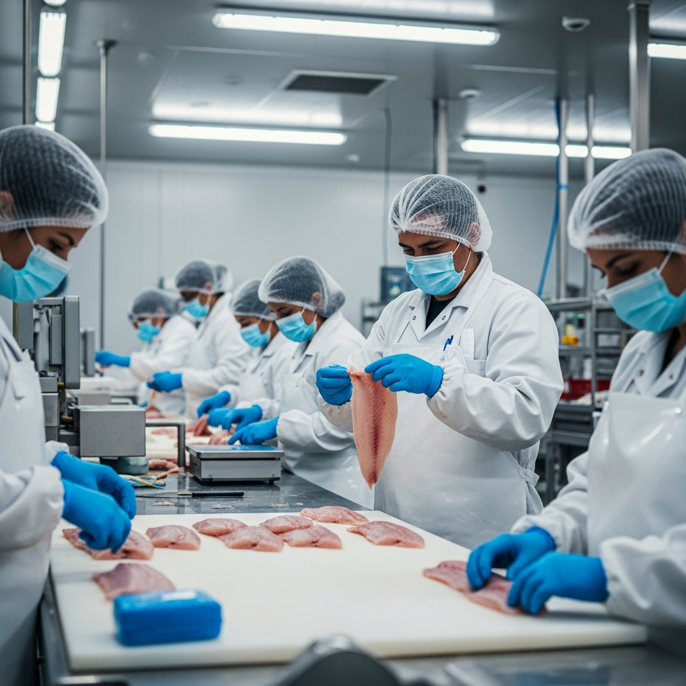
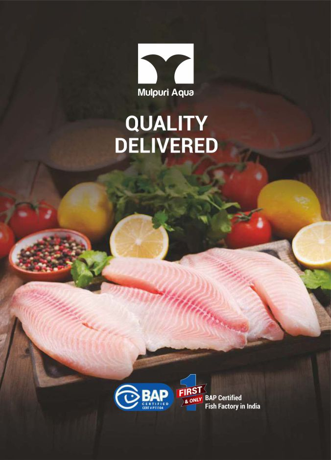
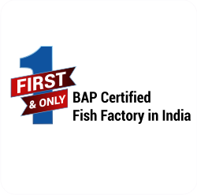
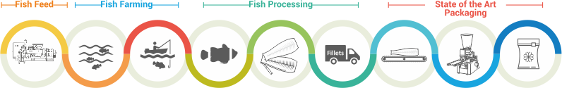

From raw material intake to container dispatch — our quality systems are designed to meet the standards of the world's most demanding seafood buyers.
Every shipment we dispatch represents the convergence of rigorous standards across three critical quality dimensions — people, process, and product.
Our Hazard Analysis and Critical Control Points system covers every stage from intake to dispatch — with documented critical limits, monitoring procedures, and corrective actions for each identified hazard.
Every batch is traceable from the farmer of origin through to the shipment container. Batch records, temperature logs, and processing records are retained and available to buyers and auditors on request.
We maintain compliance with FDA import regulations, EU food safety requirements, and target BAP 4-star certification. All documentation — certificates of analysis, health certificates, and packing declarations — prepared for each shipment.
We operate against internationally recognised food safety and sustainability standards — and are actively working toward the certifications required by our target US retail buyers.
Request Certificate Pack"No shipment leaves our facility without a complete certificate of analysis — that's our commitment to every buyer."
Mulpuri Aqua conducts pre-export microbiological and residue testing on every production batch — using accredited third-party laboratories alongside our in-house quality checks.
Antibiotic screening covers the full panel required by FDA and EU authorities. Our zero-tolerance policy on non-compliant batches means we have never had a detained or refused shipment on quality grounds.
For new buyers, we provide full test documentation from trial shipments — giving you the independent verification needed to onboard us as a supplier with confidence.



Quality control · Processing line inspection · Cold chain monitoring

Our quality management system operates across the entire value chain — from farm to finished product — with documented checkpoints at each critical stage.
All partner farms are qualified through our supplier assessment programme. Feed inputs, stocking density, water quality, and antibiotic-use policies are reviewed annually. Only approved farms supply our facility.
Every incoming batch is inspected for freshness, organoleptic quality, and weight compliance. Batches failing intake standards are rejected before entering the processing area.
HACCP critical control points are monitored continuously during processing — covering temperature, hygiene, weight variance, and visual quality. Any deviation triggers an immediate corrective action protocol.
Each production batch undergoes microbiological and residue testing at an accredited third-party lab. Certificates of Analysis are issued prior to shipment dispatch and provided to the buyer with each consignment.
Final product inspection, weight verification, and packaging integrity checks are completed before container loading. Temperature recorders are placed in each container, with data made available to buyers on arrival.
HACCP plans, COAs, facility certificates, and testing reports — available to verified buyers and approved auditors on request.
Request Documents →Our team will respond with product specifications, pricing, and sample availability within 24 hours.
Get a Quote